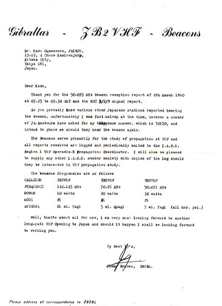
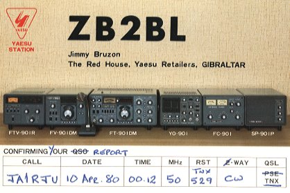
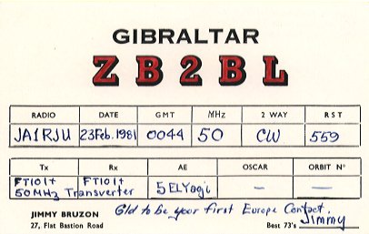

|
【ジブラルタルのZB2VHFのビーコンが聞こえた！】(CQ誌1980年4・6月号、1981年4月号)
1980年春のDXシーズンのオープニングも予想に反して遅れ、期待されていた南米のコンデションも西日本で散発的にPYがリポートされる程度で、
本格的なオープンとはなりませんでした。
ところが3月4日12:00JST過ぎ、思いもかけない信号が飛び込んできました。
それは、いままで誰一人として聞いたことのないヨーロッパの信号、ジブラルタルからのZB2VHFのビーコンでした。
「ZB2VHF QTH GIBRALTAR...」の信号は、はるか南ヨーロッパから南米を越えてロングパスによる伝搬で入感してきました。
この日の信号はJA2、4などではピークでS9で入感、26,000km以上を飛んできた電波とは信じられないほど強力でした。
この日のコンデションは午前中に東南方向の弱い国内スキャッターが聞こえただけでこれといったDXの入感もなかったため、
50.035MHZのCWのビーコンに気が付いた局は少なかったようです。
ビーコン入感は12:20〜12:40JST頃がピークでJA1〜4、9で信号が確認されています。
1エリアでは信号も弱く12:30JSTにフェードアウトしましたが、4エリアでは特に強力だったようで、
12:00JST前から13:00JST過ぎまで信号が確認できました。
ロングパスによる伝搬は1958年10月に大西洋のマデイラ島のCT3AEとのQSOが記録にありますが、
ヨーロッパ大陸からの伝搬はこのZB2がもちろん初めてです。
今回のZB2の入感でわずか3カ月たらずの間に6mで6大陸からの入感があったわけですが、
ヨーロッパとのこのような伝搬は何度も経験できるものではないので、今回QSO出来なかったのが大変残念に思われます。(1980年4月号)

ZB2VHFのBeacon初入感に対する受信リポートの返事
連絡の電話番号やビーコンの情報が書いてある
【ZB2BL→JA交信に成功！ヨーロッパと初QSO!】
それまで聞こえていた50.035MHZの「ZB2VHF QTH GIBRALTAR...」のビーコンが突然止まり、
「..QRX,QRX...」が数回キーイングされてきました。
そして、短いキャリアの送信の後「JA1BK DE ZB2BL...」が送られてきたのです。
ついに6mで最もQSOが困難と思われていた未交信の大陸、ヨーロッパとJAの初QSOが始まったのです。
4月10日09:12JSTでした。
この日の朝、ZB2VHFのビーコンが南東からのロングパスで入感しているのを最初に確認したのは、
埼玉県狭山市のJA1TGS・金子さんでした。
この朝は50.750MHzのZLのTVが強力に入感、南方向のコンデションが上昇していることを示していました。
08:50JST頃、50.035MHZにダイアルを回したところ、ZB2VHFのビーコンが入感していたのです。
「ZB2VHF入感！」のリポートは電話でJA1TGS→JA1RJU→JA1BKとリレーされ、
ただちに国際電話でZB2BLに連絡されたのでした。
国際電話を申し込んだものの、気がかりだったのはオープンしている間に相手に通じてくれるかどうかということでした。
とにかく、コンデションが落ちないことを願いながらビーコンをワッチするだけでした。
(註：当時の国際電話はダイアル直通ではなかった)
そして待つこと約10分、ついに連絡がとれたのです。
このとき、すでに信号は弱くなりつつありました。
初QSOのJA1BKのQSOが始まる頃を境にコンデションは急激に低下していきました。
この日のJAとの初QSOの模様を、後にZB2BL・Jimmy Bruzon氏は手紙で次の様に伝えてきています。
「4月10日の01:00(GIB TIME=24:00Z)を回ったころ、私は電話で起こされました。
その電話は何と6mでビーコンが入感していると言うJA1BKからのものでした。
もちろん、急いで着替えるとシャックに飛んでいきました(シャックは私の家の外＝離れ＝にあるのです)。
そして、ビーコン・キーヤーで何回かQRXを出してから、ビーコンの周波数で急いでリグのチューンをとった後、
JA1BKをCWでコールしたのです。
この日は全部で次の4局のJA'sとQSOできました。
00:12Z JA1BK
00:19Z JA1TGS
00:20Z JA1PVI
00:25Z JA2GHT
この他にもQSOしようと多くの局がパイルアップしてくれましたが、
残念なことに私はCWを最近あまり使っていなかったので、速く操作することができなかったのです...」
結果的にはこの日QSOに成功したのは4局だけでしたが、信号のレベルから言ってもこれ以上のQSOは無理だったようです。
ZB2BLの信号は09:30JSTには完全にフェードアウトしてしまいました。
この日のヨーロッパとのQSOでJAからついに6大陸全部がQSOできたわけです。
そして今回のZB2とJAのQSOはヨーロッパとアシアの6mの初QSOでもあったのです。
また、6mにおけるQSO最長距離もZB2〜JA間28,768km（ZB2BL試算）と、
1958年10月のJA3CE〜CT3AE(マデイラ島)のロングパスによる伝搬記録を大幅に更新したのです。
ジブラルタルからのビーコンが初めて入感した去る3月4日のオープニングでは、
入感を相手に知らせる手段がなかったために貴重なチャンスを逃がしてしまいましたが、
この入感の後、ZB2BLの連絡先を電報と電話でいち早く問い合わせるなどして次の入感に備えていたのが、
今回の2度目のオープンでさっそく功を奏したわけです。

1980年4月10日の初オープンの受信リポートに対するQSL
【ZB2BL→JA再びオープン 多数がQSOに成功！】
だれがこの日のFBなオープニングを予想したでしょうか。
昨年4月10日の初QSOでは、わずかに4局のJAがQSOしたにすぎなかったヨーロッパと、
わずか1年たらずで、しかも1回のオープンで100局近い局がQSOしてしまったのです。
2月23日、09:25JSTにZB2VHFのビーコンが入感しているのを確認したJA1TGS・金子さんからの第一報は、
ただちにJA1RJUから国際電話を通じてジブラルタルのZB2BL・Jimmyに連絡されました。
「...ビーコンが入感している」
「いま聞こえているのか？」
「いま聞こえています。6mにオン・エアできますか？」
「もちろん！5分間待ってくれ...」
幸運にもこの日は、信号確認から2、3分で電話回線はつながったのです。
簡単なやりとりと真夜中の電話を詫びて受話器を置いたとたん、なんとビーコンはみるみる弱くなっていったのです。
しかし、信号がやっと確認できる程度になった5〜6分後にはZB2VHFのビーコンがZB2BLに替わったのです。
こちらからの最初のコールに対してZB2BLはSSBで応答してきました。
残念なことにSSBでは内容を理解できません。
再びCWによるコールに対してこんどはZB2BLもCWで応答してきました。
こうして09:44JSTからこの日の初QSOがJA1RJUによって開始されました。
いつフェードアウトするかわからない弱い信号が、その後延々3時間以上にわたるFBなオープンになろうとは予想もできませんでした。
昨年の初QSO以来、SSBでのQSOを望んでいたJimmyはJA1RJU、JA1MRSのQSO後、
JA5のSSB局を指定して呼んできました。
この頃にはコンデションも持ち直しSSBの信号も了解できるほどにコンデションは上がってきました。
09:54JSTにZB2BLが初めてSSBでQSOした局はJA5FDRでした。
時間が経過するにつれてコンデションは西日本へ移り、信号も強くなりました。
この頃にはオープンに気が付いたJA'sで50.035MHZは猛パイルとなってしまいました。
ZB2BLもパイルアップをさばくためコールエリアの指定をするほどでした。
その後、一度落ち込んだコンデションも12:00JST頃に再び上昇してJA4、5、6エリアではRS59＋で入感、
モービルのアンテナでも受信できるほどになりました。
ZB2BLは12:50JST頃までCQを出していましたが、まもなくZB2VHFのビーコンに切り替えQRTしてしまいました。
このビーコンは、西日本で13:40JST頃まで確認できました。
現地時間の01:30(GIB)から明け方まで3時間以上にわたってJAのためにQSOしてくれたJimmyに心から感謝したいと思います。


ZB2BL Jimmy Bruzon氏と大オープンとなった1981年2月23日のQSLカード
【ZB2BLのその後】(CQ誌1981年5月、7月号V-UHF BAND NEWS）
2月23日に始まった今シーズンのZB2BLとのオープンは、3月に入ってから本格的な入感となりました。
リポートされているだけでも3月1、4、5、10、16、17日の6日間もFBにオープンしています。
特に5、16、17日はSSBで強力に入感して多くの局がこの日QSOしました。
ZB2BLとのQSOは当初、ZB2VHFのビーコンの入感に対して電話連絡した後に50.035MHZでQSOといったパターンでしたが、
最近では50.110MHZ付近のSSBで直接入感してくる事が多くなっています。
これにより、以前のようにビーコンを聞きつけてイライラしながら待つ事も少なくなりました。
しかし、オープン時のパイルアップはすさまじく、エリア指定などでさばいているものの、
同一周波数でのオペレートでは局数の多いエリアの時にはQSOも効率的とはいえなかったようです。
EL2FYのようにIC-551Dに替えて大幅なスプリット・フリケンシーにより能率良くさばいている例もあるため、
ZB2BLにもスプリットでQSOして貰うためにJAから急遽IC-551Dが送られました。
今回送られたIC-551Dは、ZB2BLがJAからQSOできる唯一のヨーロッパの局としてJAのためにQRVし、
多くの局に“6m WAC”をプレゼントしてくれたお礼の意味を込めて寄贈されたものです。
この趣旨にご賛同いただいた“既にQSO済み”(未交信の局はご遠慮いただいた)のJA各局からの寄付金によって購入され、
3月26日にJimmyに送られました。
【ZB2BL、アクティブに！】
多くのJAに“6m WAC”をプレゼントしてくれたZB2BL・JimmyからJAとの全QSOリスト(ログ)とともに、
先にJAから寄贈されたIC-551Dのお礼の手紙が届きました。
「･･･前略、IC-551Dと電源が無事届いたことをお知らせします。
いま私はこれを使うチャンスがくるのを待っているところです。
リグを購入して、気前よく私に寄付してくれたJAの各局に心から感謝しています。
このリグによって、わたしの装置も以前に比べ大変改善されました。
パワフルになったことやスプリットQSOが出来るようになっただけでなく、
IC-551Dのオートスキャンの機能によってシャックにいる時間は絶えず6mをモニターする事が出来、
バンドがオープンすればどんな信号でも聞くことが出来るようになりました。
最近、IC-551Dがベストの状態で使用できるように6mのアンテナも調整しました。
再び、JAとのオープンによってもっと多くのJA'sとコンタクト出来るのを心待ちにしています。
【ZB2BL QSO 日別全リスト】
(1980年4月10日の初QSOから、1981年3月17日まで。 *印:CWによるQSO)
(10 Apr.1980)(23 Feb.1981)(23 Feb.1981) (5 Mar.1981)(16 Mar.1981)(17 Mar.1981)
JA1BK* JA4IQK* JA6MTU JA2POK JH3LCX JA2PAP
JA1TGS* JK1BER* JR4FPJ JA4BJO JF2MBF JH2AHC
JA1PVI/1* JH2TQH* JK1BER JA4HTW JA1AUH JF1UMK
JA2GHT* JE2BGJ JH2VHL JA5BYL JA0CAJ JF2CRP
(23 Feb.1981) JE2IIH JE6LMH JA5FFJ JH7BRW JA6LLA
JA1RJU* JR2HCB JA5PEE JA6IMJ JF3HAJ JR6BZK
JA1MRS* JI1DLZ JA6WMV JH6BPG JE2KCR JJ1QKM
JA5FDR JH2TQH JH5DWR JA7EVP JK1FDA JH6TEW
JA1TGS JJ1TZK JG3RGG JA2BNV JE2PIS JA6RJK
JA2BZY JF1EPK JA5IBW JH1ECU JR1SQU JA3IW
JH4JPO JF2DEJ JH6LAA JA3AA JF2BKV JE6KNA
JH1GUL JA1TGS JH6JLQ JH4KAY JH1USR JH7UKK
JA2DDN JR2AJS JH4YLB JA3EX/5 JR3KRK JA7ROK
JA4KJO JE2KCP JH6BJE JA5EWQ JG1NZB JH7LLE
JR6MGG JH2SCS JA5IEP JR6IGG JA3NTE JH6YCL
JA2VFH JA1PVI JA5YNY JA9WFR JE1HYR JH7EKJ
JE2DTL JA4MBM JE2VJJ JE2KCR JH5FQO JH7BCI
JA2DJL JA2GHT JA2VFH* JH3AAZ JA5NG JA7RCB
JK1RWC JH3CWA JH4JPO* JA3EGE (17 Mar.1981) JH7LGJ
JG1OPL JE2SFT JH4RUG* JH4XIK JA2ODM JA7UU
JA2BLJ JH2EBN (5 Mar.1981) JH4XDS JA2MJO JA6AER
JA2TTO JE2LKJ JH3LBD* JA5YRZ JA2HMO JA2SAP
JA5CMO JE2IIH JH5AVG JA6LCJ JA1QIY JA7EIQ
JH4QHO JH1TID JA2PAP JE2QJJ JE1TGN JA6LV
JF1QZW JA1BK JA1BK JA5HTP/3 JA9TKL JA6TEW
JE3CYV JH4ELP JG1TRW (16 Mar.1981) JF3FRP JA6ZJ
JA1RDW JA4KJO JA1VOK JA0AGA JF3KQA JA6WW
JA5HTP JA4MBY JA7BZU JH0HZO JA1NVG JR6LJV
JA4SOU JA5CBP JJ1VEZ JF2ECJ JE1TGN JA6SEL
JH4XJH JA6WFM JH1XTB JR3PSY JA3JXJ JR7IWT
JH4QGW JA5FMP JR1MFD JA2BNV JG3AOD JA7NAM
JH3LBD JA6VA JE1FWO JA9WFR JA2FTL JA6BCK
JH3PRR JE2IKS JF1ORS JG3FFV JF2SLG
JA4ZGP* JA3RQ JI1JGO JA3LCX JA0OTQ
JA4CZD* JE3NPK JA1ELY JA1MRS JA3LIU
JH3LBD* JG3EWO JG1NZB JA1QYU JA2NFJ
|